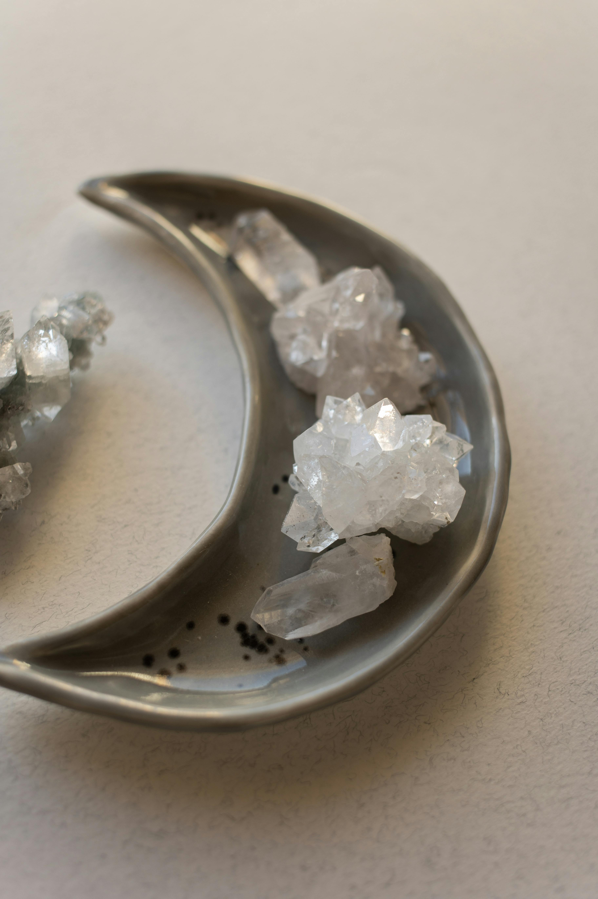

As a witch, you probably feel that one of the most important tools in your kit is crystal magic. Crystals have been used by witches for centuries to focus and direct their spells, and today, they are still one of the most popular ingredients in witches’ magic. So, if you’re looking for crystals and gemstones that are very flexible when it comes to witchcraft, then read on! This list of top 10 crystals for witches includes crystals that are known to help stimulate psychic abilities, attract positive energy, and protect against negative energy. Keep reading to find out more about these magical stones!

Clear Quartz Crystal
Clear Quartz is a universal crystal, easily programmable, and can be used for many different uses. It’s a versatile crystal and should be included in every witch’s collection. It’s also a transceiver, transmitter, and amplifying stone that can make anything it touches more powerful. The stone fulfills many different functions from purification to healing, calming, or even activating psychic abilities due to its powerful energy. Its energies are also able to reduce stress by balancing the chakras of the body as well as helping clear out negative entities that can make one feel stuck emotionally. Quartz crystals can ward off nightmares, protect the mind and body, and help with concentration and relaxation. It is one of the most popular stones used by crystal healing practitioners in their work, especially healers who practice Reiki meditation. This is a perfect stone for the beginner witch.
Rose Quartz Crystal
Rose quartz, with its rose-hued crystal facets and gentle rose color, gives off sweet feminine energy. Its healing properties include enhanced psychic ability towards divination. It is also helpful in alleviating depression, and stress as well as professional or personal relationships. Rose quartz can be used by witches to attract love into one’s life. Rose quartz is the second most common quartz crystal, used by witches and Wiccans to attune with the divine feminine energy fields of the earth. Rose quartz also occurs in beautiful pink shades that make it a popular choice among those who use crystals for love spells and rituals. It can be found on almost every metaphysical website or bookstore because it’s supposed to have powerful healing properties: raising vibration, clearing toxicity from body cells, boosting emotions & feelings; and enhancing psychic abilities. It’s also often used in self-care and self-love rituals.
Citrine
Citrine is yellow quartz with iron oxide minerals. A citrine point has been used in crystal healing for centuries and was believed to have the power of accessing higher realms by contacting other planes through meditation. Citrine can be used as an amplifier, which helps amplify healing energies from crystals such as topaz, obsidian, or amethyst into chakras and physical bodies. It’s often used in prosperity and abundance magic alongside other crystals like pyrite and aventurine. Citrine is associated with the solar plexus chakra and is thought to help align and balance that chakra. Naturally formed citrine is usually a light yellow color. The darker and brighter crystal that is often sold as citrine is heat-treated amethyst. There are contrary opinions as to the energies of naturally formed citrine vs. heat-treated/ created citrine.
Aventurine
Aventurine is a beautiful green stone that often is flecked with gold mica. Along with pyrite, it’s one of my favorite stones for prosperity and abundance. Besides abundance, aventurine is aligned with optimism, leadership, confidence, and happiness. It’s thought that the name comes from the Italian phrase “a venture” which means by chance, so it’s also known as a good luck stone. Aventurine is associated with the heart chakra and with love in that aspect- a great crystal for healing the heart. Through the heart-centered alignment, the crystal is also associated with empathy and appreciation. It’s a perfect stone to help find a job that you will love.
Selenite (Satin Spar)
Selenite is one of the most popular selenite healing crystals that comes in different shapes, sizes, and colors. Selenite stones bring clarity and renewed energy into your life while also clearing out any negative energies. Many people use selenite to cleanse and charge their other crystals. It’s thought that it is naturally cleansing and can prevent negative energies from entering your space. Selenite is also associated with the moon and the Greek goddess Selene. It’s often seen on a witch’s altar for the full moon esbat. Fun fact: While there is a stone called selenite, what is usually sold as selenite is actually a crystal called satin spar.
Amethyst
Amethyst is a powerful crystal known mostly for its properties aligned with prophecy, divination, and the third eye chakra. The name actually means “not intoxicated” -translated from amethustos and the ancient Greeks believed that it could help enhance sobriety. It’s thought that amethyst can be cleansing to your soul and help you connect to spirituality and the divine. This is why many use it in their meditation practice. Many witches and those who practice Wicca keep an amethyst with their tarot deck. Others like to add amethyst to their reading space to help enhance their intuition. It’s an affordable and very accessible crystal, often found in geodes.
Calcite
Calcite is a powerful stone that’s generally referred to as a gentle healer by many witches and crystal enthusiasts. Calcite comes in many different colors and shapes, each having its own different properties. Most calcites are considered to be “nurturing” stones. Green calcite is associated with the heart chakra and love. It helps with self-forgiveness and compassion. Orange calcite aligns with the sacral chakra and is thought to help encourage creativity and energy. Blue calcite is aligned with peace and some think that it can help with the relief of anxiety as well as communication, as it’s associated with the throat chakra. Other colors are similarly aligned with chakras and radiate gentle energy. In their rough form, they are very shiny and may even feel a little waxy to the touch.
Tourmaline
Tourmalines are brightly colored varieties of quartz, containing aluminum and silicon (SiO2). When a tourmaline crystal catches the light, it gives off an iridescence that shows flashes of color. Tourmalines are considered to be one of the most powerful stones and there are several different colors of tourmaline you may want to add to your collection. Black tourmaline is long-known to stop the effects of negative energy in our homes and offices. Turquoise tourmaline is traditionally known as a stone that brings good luck, enhances communication with friends, and aids us in connecting spiritually. Red tourmaline stones have also been associated with romance, self-confidence, and rashness (thought to create bravery or courage). Green is thought to be an elemental healer for souls who are stuck on emotional/mental levels.
Agate
Agate is a form of chalcedony which owes its name to the Greek word “agathos” meaning good or well-being. Agates come in all shapes and sizes and are often dyed in different colors. If you’ve seen a brightly colored geode bookend before, chances are that it’s a brightly colored agate. Agate’s magical properties include transforming negative energy into positive energy and easing stress. Like tourmalines, there are different types of agate, including moss agate, tree agate, fire agate, and blue lace agate. Each of these agates carries its own properties in nurturing, supportive energy.
Jasper
Jasper is also a variety of chalcedony and looks similar to agate. Once thought to promote health and healing by providing support during times of adversity, jasper eventually became associated with the mind/spiritual connection in humans. Jasper is also thought to connect people to one another. Like agate, there are different types of jaspers all carrying different energies. The most popular jaspers are red jasper, yellow jasper, and unakite jasper, though there are many other types. Red jasper is often used for indicating blocks, and busting through them. Yellow jasper is used for money and strength. Unakite Jasper is associated with the heart chakra and allows people to connect emotionally.